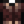

Cherry Bomb
| Cherry Bomb | |
| Generates a small explosion. Stand back! | |
| Information | |
| Source |
|
| Sell Price | |
| Crafting | |
| Recipe Source | |
| Ingredients | |
The Cherry Bomb is a one-time use explosive item. It damages certain items within its radius. Other items are impervious to its effects.
Cherry Bombs can be crafted or purchased from the Dwarf (both in the Volcano Dungeon and The Mines) for  450g. They can also be dropped by Rock Crabs or Duggies when slain. Fifteen Cherry Bombs may occasionally be found in treasure rooms in the Skull Cavern. Crates and barrels in the "dangerous" Mines or Skull Cavern can drop one. 3-5 Cherry Bombs may occasionally be found in Supply Crates on the Beach Farm if the player has not upgraded the Farmhouse yet. A Cherry Bomb may occasionally be purchased from the Traveling Cart for
450g. They can also be dropped by Rock Crabs or Duggies when slain. Fifteen Cherry Bombs may occasionally be found in treasure rooms in the Skull Cavern. Crates and barrels in the "dangerous" Mines or Skull Cavern can drop one. 3-5 Cherry Bombs may occasionally be found in Supply Crates on the Beach Farm if the player has not upgraded the Farmhouse yet. A Cherry Bomb may occasionally be purchased from the Traveling Cart for  150–1,000g. Twenty Cherry Bombs can be given as the 10th prize from the prize machine in the Mayor's Manor (33% chance). Kent may randomly send one in the mail as a gift.
150–1,000g. Twenty Cherry Bombs can be given as the 10th prize from the prize machine in the Mayor's Manor (33% chance). Kent may randomly send one in the mail as a gift.
If a player has read the Dwarvish Safety Manual, they will take 25% less damage from a Cherry Bomb.
Effects
Note that the following is not an exhaustive list:
- Rocks and ore/gem nodes will drop their respective ores, gems, etc.
- Mushrooms, Artifact Spots, foraged minerals and Dragon Teeth will be destroyed.
- Any untilled dirt tiles within a significantly smaller radius will become tilled. In the Mines and Skull Cavern, any items (e.g., clay, artifacts) will be dropped at the same rate as a player using a hoe; elsewhere, nothing will drop (unless the spot in question is the subject of a Secret Note).
- Crafted artisan and refining equipment will be destroyed.
- Heaters will be destroyed.
- Auto-Grabbers will not be destroyed, whether empty or containing items.
- Trees will be destroyed when their health reaches zero.
- Trees will drop wood, sap, and any seeds they contained.
- Ten Cherry Bombs will knock down a fully grown tree, and five more will destroy the stump.
- Five Bombs will knock down a fully grown tree, and three more will destroy the stump.
- Four Mega Bombs will knock down a fully grown tree, and two more will destroy the stump.
Radius
The Cherry Bomb has a radius of 3 (diameter of 7) tiles.
Gifting
| Villager Reactions
| |
|---|---|
| Dislike | |
Bundles
Cherry Bomb is not used in any bundles.
Tailoring
A Cherry Bomb can be used in the spool of the Sewing Machine to create the

Bomber Jacket. It can be used in dyeing, serving as a red dye at the dye pots located in Emily's and Haley's house, 2 Willow Lane. It can also be used as a red dye when used in the spool of the Sewing Machine with a dyeable clothing item in the feed.Quests
Cherry Bomb is not used in any quests.
History
- 1.4: Ore nodes in the Quarry now drop ore instead of stone. Gem Nodes in the Quarry are now destroyed by cherry bombs. Can now be used in Tailoring.
- 1.5: Now sold at the shop in the Volcano Dungeon. Can now be found in Supply Crates on the Beach Farm.
- 1.6: Cherry Bomb price from the Dwarf increased from
 300g to 450g. Reading the Dwarvish Safety Manual will reduce damage to players. Can obtain from the Prize Machine.
300g to 450g. Reading the Dwarvish Safety Manual will reduce damage to players. Can obtain from the Prize Machine.